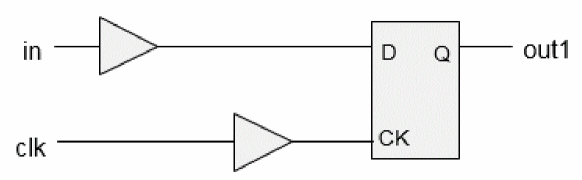
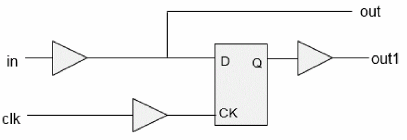
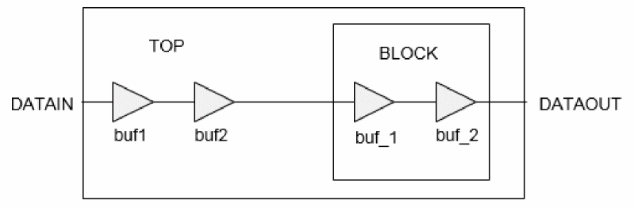
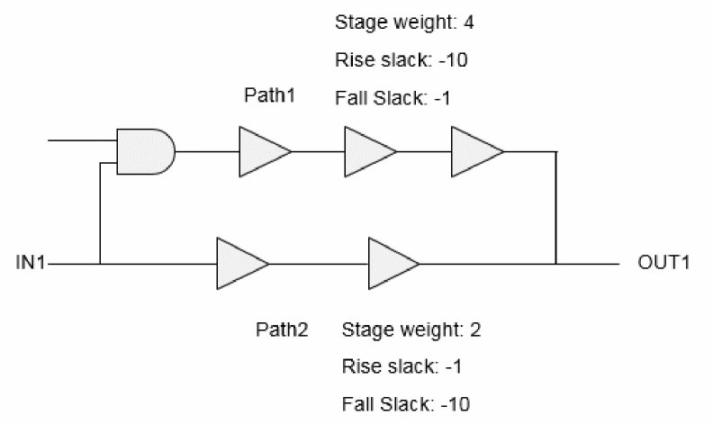

Limitations of ETM
The limitations of ETM are as follows:
- In path-slew propagation mode, the slew/delay dependency on side inputs will be lost.
-
Consider the following two cases:
- clk-in check ac will depend on the slew at the D and CK pins of the register. Hence these check arcs are modeled as 2D-check arcs, as expected.
- In the second case, the slew at D pin will depend upon the loading at the out port. Hence check arc value will essentially depend upon the slews at the D and CK pins and the out load as well. But currently model extraction does not support 3D modeling of check arcs.
Figure -9 Check arc
Figure -10 Load dependent check arc
The following timing report shows setup_rising present in the ETM:
Path 1: VIOLATED Hold Check with Pin cppr_block/CLKIN Endpoint: cppr_block/DATAIN (^) checked with leading edge of 'clk' Beginpoint: DATAIN (^) triggered by leading edge of 'clk2' Path Groups: {clk} Other End Arrival Time 0.000 + Hold 5.000 + Phase Shift 0.000 = Required Time 5.000 Arrival Time 0.500 Slack Time -4.500 Clock Rise Edge 0.000 + Input Delay 0.500 = Beginpoint Arrival Time 0.500 Timing Path: -------------------------------------------------------------------- Pin Arc Cell Edge Arrival Time -------------------------------------------------------------------- DATAIN -> DATAIN ^ ^ 0.500 cppr_block/DATAIN cppr_block ^ 0.500 --------------------------------------------------------------------
The following timing report shows no setup_rising in the ETM:Path 1: VIOLATED Hold Check with Pin cppr_block/CLKIN Endpoint: cppr_block/DATAIN (^) checked with leading edge of 'clk' Beginpoint: DATAIN (^) triggered by leading edge of 'clk2' Path Groups: {clk} Other End Arrival Time 0.000 + Hold 5.000 + Phase Shift 1.800 = Required Time 6.800 Arrival Time 0.500 Slack Time -6.300 Clock Rise Edge 0.000 + Input Delay 0.500 = Beginpoint Arrival Time 0.500 Timing Path: ------------------------------------------------------- Pin Arc Cell Edge Arrival Time ------------------------------------------------------- DATAIN -> DATAIN ^ ^ 0.500 cppr_block/DATAIN cppr_block ^ 0.500 -------------------------------------------------------
-
When ETM is read at the top, the information about the stage count inside the block is lost. Hence for paths coming in/out of the block, incorrect stage count is calculated while applying AOCV derate (on the top level instances which fall in this path).
Figure -11 ETM at the top level
When BLOCK netlist is read at the top level, the stage count for buf1 and buf2 is 4, but when an ETM of BLOCK is read, their stage count becomes 2.
The following example shows a timing report with BLOCK netlist:Path 1: MET Late External Delay Assertion Endpoint: DATAOUT2 (^) checked with leading edge of 'clk' Beginpoint: DATAIN (^) triggered by leading edge of '@' Path Groups: {clk} Other End Arrival Time 0.000 - External Delay 0.010 + Phase Shift 3.600 = Required Time 3.590 - Arrival Time 0.354 = Slack Time 3.236 Clock Rise Edge 0.000 + Input Delay 0.000 = Beginpoint Arrival Time 0.000 ------------------------------------------------- Aocv Aocv Cell Pin Stage Derate Count ------------------------------------------------ DATAIN 4.000 1.169 BUF buf2/Y 4.000 1.169 BUF buf_2/Y 4.000 1.169 BUF BLOCK/buf7/Y 4.000 1.169 BUF BLOCK/buf8/Y 5.000 1.167 DATAOUT2 ------------------------------------------------
The following example shows a timing report with BLOCK ETM:Path 1: MET Late External Delay Assertion Endpoint: DATAOUT2 (^) checked with leading edge of 'clk' Beginpoint: DATAIN (^) triggered by leading edge of '@' Path Groups: {clk} Other End Arrival Time 0.000 - External Delay 0.010 + Phase Shift 3.600 = Required Time 3.590 - Arrival Time 0.325 = Slack Time 3.265 Clock Rise Edge 0.000 + Input Delay 0.000 = Beginpoint Arrival Time 0.000 -------------------------------------------------------------------- Aocv Aocv Cell Pin Stage Derate Count -------------------------------------------------------------------- DATAIN 2.000 1.173 BUF buf2/Y 2.000 1.173 BUF buf_2/Y 3.000 1.171 cppr_block BLOCK/DATAOUT2 4.000 1.169 DATAOUT2 --------------------------------------------------------------------
While modeling any arc, the rise and fall constraints are written separately. While modeling stage weights, the worst of rise/fall stage weight is written in ETM.
Consider the following example showing two paths with given stage weight and rise/fall slack values. The rise and fall arcs will be modeled corresponding to Path1 and Path2, respectively, between IN1/OUT1. The single value of stage weight (4 in this case) will be written in ETM. Ideally, the fall constraint should have the stage weight of 2 in this case, but due to the limitation, the stage weight becomes 4 adding to the pessimism in analysis.
Figure -12 Modeling stage weights

pin (DATAOUT ) {
direction : output ;
timing() {
timing_type : combinational ;
timing_sense : positive_unate ;
cell_rise (lut_timing_2 ){
values(\
" -10, -20", \
" -30, -40" \
);
}
cell_fall (lut_timing_2 ){
values(\
" -10, -20", \
" -30, -40" \
);
}
aocv_weight : 4.0000;
related_pin :" CLKIN ";
}
Return to top